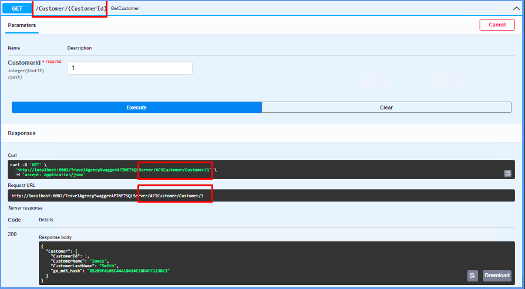

Customizes the path of a service declared in API object.
<RestPath>::='['RestPath("/<SubPath1>[/'{'&Var1'}'/'{'&Var2'}'/<SubPath2>]")']'
View Syntax conventions
SubPath1,..., SubPathN
Are part of the path to access the service. They are automatically added after the Service base path.
&Var1,..., &VarN
Are optional variables defined within the API object, which must be parameters in the service defined with the in operator.
The path of a service includes, in a predetermined manner, the Services base path followed by the name of the service. This annotation allows you to customize the path and to even include the in parameters within it.
By default, the Services base path property has the name assigned to the API object during its definition, as shown below:
That means that, for this example, when you execute the API object, the default path to access the service is:
http://<AppPath>/APICustomer/ListCustomers
With RestPath you can customize the service’s path. For instance, to change it from ListCustomers to Customers:
http://<AppPath>/APICustomer/Customers
To achieve this, you add [RestPath("/Customers”)] before the service definition.
1. Obtain a list of clients.
Consider the following Transaction:
Customer
{
CustomerId* (Autonumber property = Yes)
CustomerName
CustomerLastName
}
Create an Structured Data Type (SDT) object with the name SDTCustomer. Drag the Customer Transaction from the KB Explorer to the SDT Structure. Define the SDT to be a collection by clicking the checkbox Is Collection. Substitute the name SDTCustomersItem with Customer:
Create a Data Provider object called DPCustomerList and fill out as shown below:
After dragging the SDT to the Data Provider Source, the Output property will automatically be configured with the SDTCustomer value.
Create an API object called APICustomer and define the following:
Variables:
SDTCustomer (Type:SDTCustomer)
Service Source:
Customer
{
[RestPath("/Customers")]
ListCustomers(out:&SDTCustomer) => DPCustomerList(&SDTCustomer);
}
The DPCustomerList object is published as a service called ListCustomers.
And last, if you want to expose the service with the OpenAPI format, you need to set in the API object the Generate OpenAPI interface property to Yes.
Upon executing the API object, you will see the following:
2. Obtain information about a client.
Now consider the same Customer Transaction of the previous example and define it as Business Component.
Then, create a Procedure object called ReturnOneCustomerData, with the following definition:
Variables:
&Customer (Type: Customer) &CustomerId (Type:Attribute:CustomerId)
Rule:
Parm(in:&CustomerId, out:&Customer);
Source:
&Customer.Load(&CustomerId)
if &Customer.Fail()
&Customer.CustomerId = 0
&Customer.CustomerLastName = "Invalid Customer"
Endif
Note: Keep in mind that CustomerId has its Autonumber property = Yes.
This Procedure receives a customer’s Id and then accesses the database using the Load method to then return the information that corresponds to the customer required. When no information is found, the customer Id is assigned and returned with value 0 and the client name with "Invalid Customer".
Then, create an API object (called, for example, APICustomer), and define:
Variables:
&Customer (Type: Customer) &CustomerId (Type: Attribute:CustomerId) &Message (Type: Messages.Message, GeneXus.Common) &Messages (Type: Messages, GeneXus.Common)
Service Source:
Customer
{
[RestPath("/Customer/{&CustomerId}")]
GetCustomer(in:&CustomerId, out:&Customer, out:&Messages) => ReturnOneCustomerData(&CustomerId, &Customer);
}
The ReturnOneCustomerData Procedure is published as a service called GetCustomer.
Events:
Event GetCustomer.Before
if &CustomerId < 0
&RestCode = 412
return
Endif
EndEvent
Event GetCustomer.After
if &Customer.CustomerId = 0
&Message.Type = MessageTypes.Error
&Message.Description = format("Customer %1 not found", &CustomerId)
&Messages.Add(&Message)
&RestCode = 404
Endif
EndEvent
The trigger event GetCustomer.Before verifies if the Id entered is less than zero. In this case, the ReturnOneCustomerData procedure is not executed, returning error 412 (access to the destination resource denied).
Additionally, the GetCustomer.After event returns the error and description following the execution of the ReturnOneCustomerData procedure and obtaining Id 0. Otherwise, it shows the data of the customer entered, on screen.
And last, if you want to expose the service with the OpenAPI format, you need to set in the API object the Generate OpenAPI interface property to Yes.
Upon executing the API object, you will see the following:

If you want, you can add another variable to RestPaht. For example, you can add CustomerName:
Customer
{
[RestPath("/Customer/{&CustomerId}/{&CustomerName}")]
GetCustomer(in:&CustomerId, in:&CustomerName, out:&Customer, out:&Messages) => ReturnOneCustomerData(&CustomerId, &CustomerName, &Customer);
}
Note:
Since GeneXus 17 Upgrade 9.
| Backlinks | ||
| Category:API object | API Object Syntax | Toc:First Steps with API Objects |
| GeneXus 17 Upgrade 9 | RestMethod annotation |